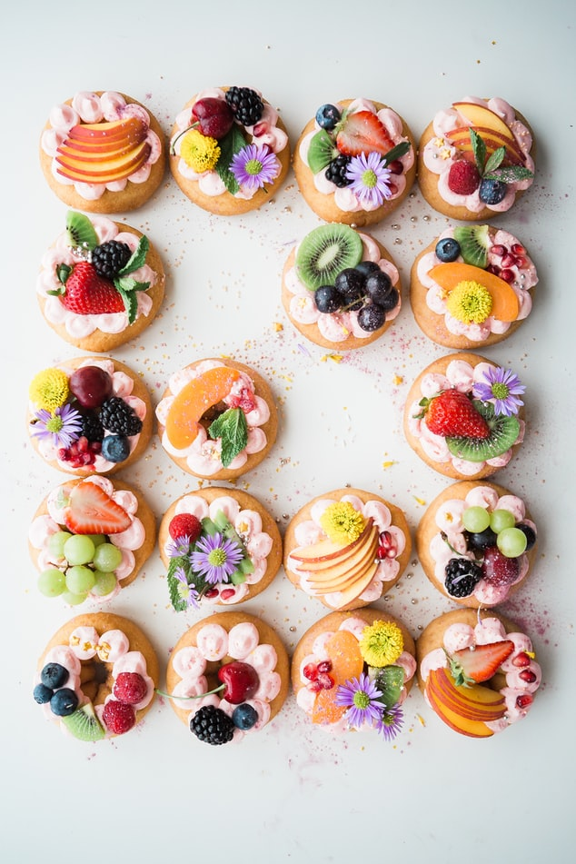

Equipment
- 2 bowl
- 1 pastry brush
- 1 deep fryer
Ingredients
- 2 x 7 g yeast
- 1/4 cup water warmed
- 1 cup milk warmed
- 1/4 cup caster sugar
- 60 g butter melted
- 2 egg lightly beaten
- 3 3/4 cup plain flour
- 1 egg whites lightly beaten
- 1/2 cup raspberry jam
- 1 cup oil hot
- 1 cup caster sugar to coat
Steps
- Combine yeast, water, milk and sugar in a small bowl. Cover and stand in a warm place for about 10 minutes.
- Stir butter and eggs into yeast mixture.
- 1 cup milk warmed
- Sift flour into a large bowl, stir in yeast mixture and mix to a soft dough. Cover and stand in a warm place for about 50 minutes or until it has doubled in size.
- Turn dough onto a lightly floured surface and knead for about 5 minutes.
- Roll dough until about 1 cm thick and cut into 5 cm rounds.
- Brush half the rounds with egg white.